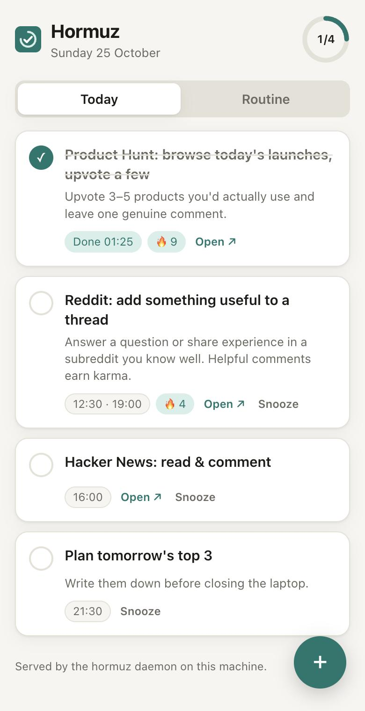

Some things belong in every day: check Product Hunt and upvote a few, add something useful on Reddit, read Hacker News. Hormuz holds that list, reminds you at the times you choose and keeps nudging until you tick it off.
Universal app for Apple silicon and Intel, signed and notarized by Apple.

Not a to-do list that fills up and goes stale. A short routine that comes back every day.
Tasks repeat daily, on weekdays, at weekends or on the days you pick, each with one or more reminder times and a link to open.
Turn on "every N minutes until done" and the reminder keeps coming back. Snooze when you need to; tick it off and it stops.
Every day you finish a task adds to its streak, so the routine actually sticks.
A tiny daemon starts at login and sends native notifications, even with every window closed. Missed some? You get one summary, not a burst.
A native desktop app, a hormuz command and a local web page, all reading the same file, so they always agree.
No account and no cloud. Your list lives in one SQLite file on your machine, and the local API only answers your own computer.
The CLI and background daemon for macOS and Linux, built from source with Rust.
# 1. install cargo install --git https://github.com/hormuz-labs/hormuz-todo hormuz # 2. starter routine hormuz seed # 3. reminders from now on, at every login hormuz daemon install # today's checklist hormuz hormuz done 1 hormuz add "Read HN" --at 16:00 --days weekdays --nag 45
One Rust core, one interface, every platform.
| Platform | How |
|---|---|
| macOS app | Download the .dmg · universal, signed and notarized |
| CLI + daemon | cargo install · macOS and Linux |
| Windows and Linux app | Build from source · Tauri 2 |
| iOS and Android | Build from source · reminders are scheduled as native notifications |